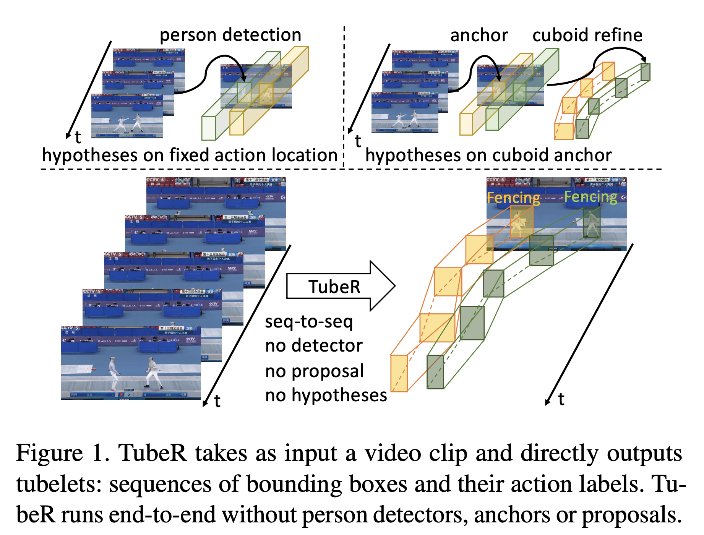
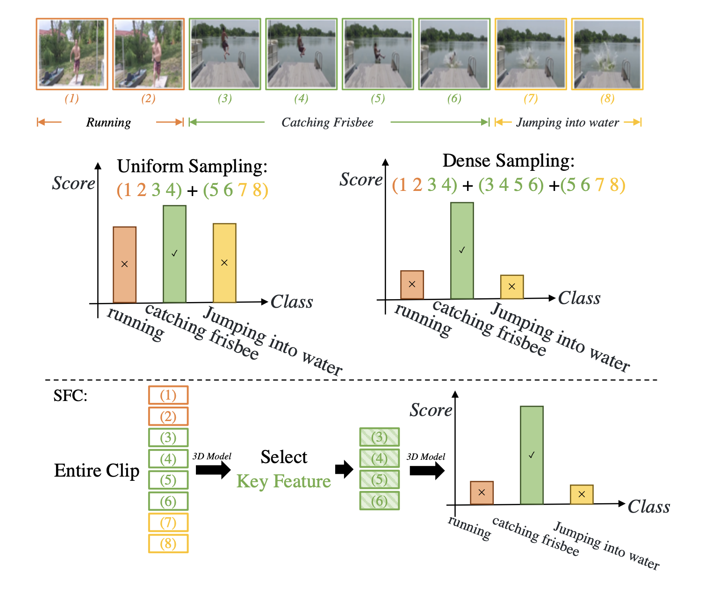
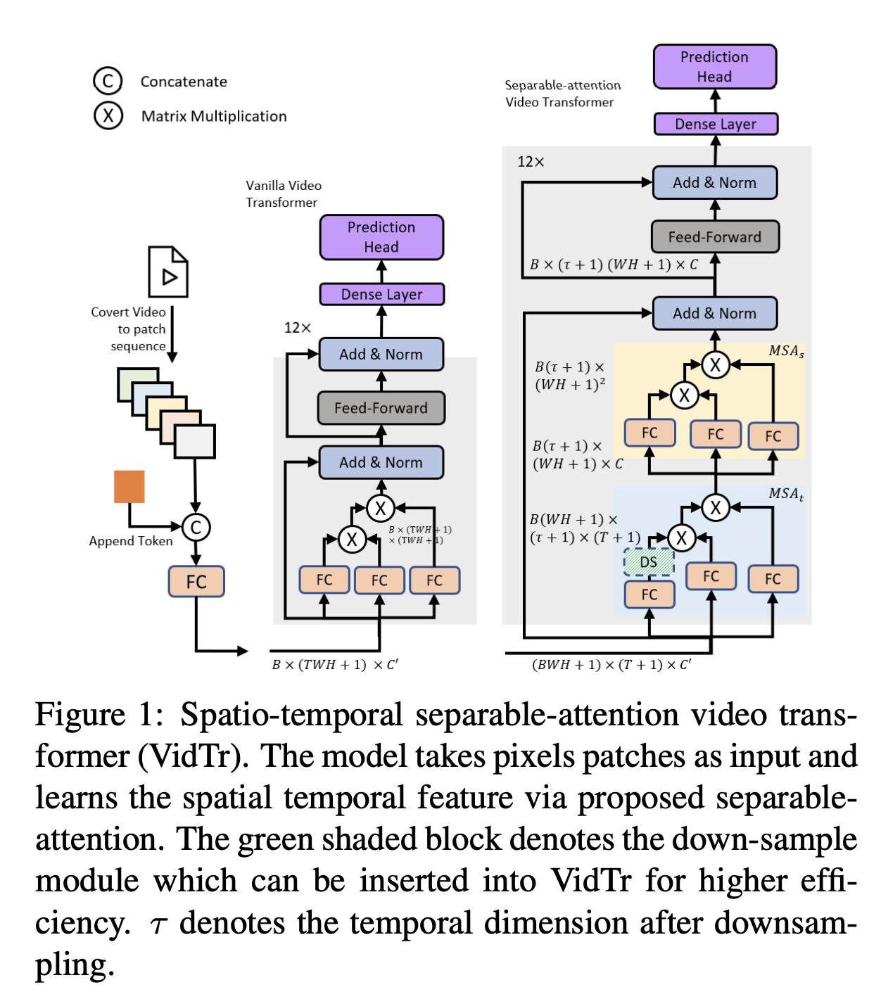
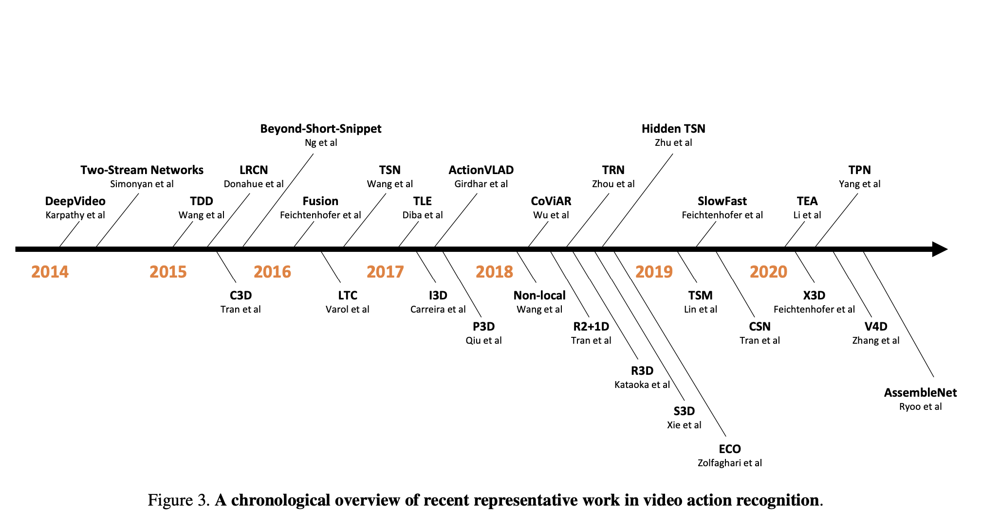
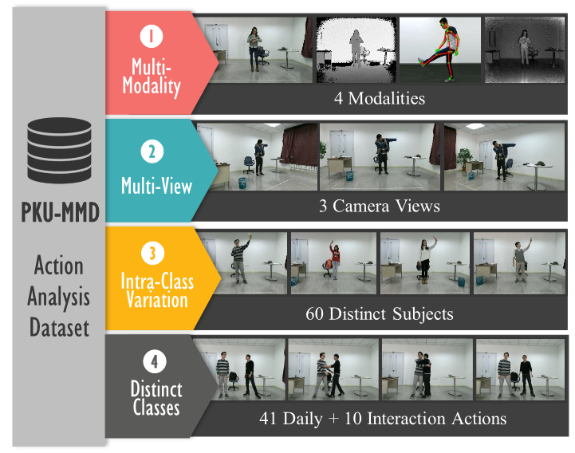

Staff ML Engineer · TikTok Video Search
I'm a Staff Machine Learning Engineer at TikTok's Video Search Team, where I serve as tech lead for relevance and pretraining. I work with a group of talented individuals to build the world's largest short video search engine with tens of billions of videos, serving billions of users daily. My team focuses on developing BERT/LLM models as part of the search engine, utilizing advanced techniques in CV/NLP/Multimodal learning and pretraining.
Previously, I was an Applied Scientist at Amazon AI, conducting cutting-edge research and developing real-world applications for video and action understanding. I hold a Master's degree in Computer Vision from CMU and a Bachelor's degree in Computer Science, Summa Cum Laude, from Peking University, under the supervision of Prof. Jiaying Liu.
I remain deeply interested in deep learning, computer vision, multi-modality learning, and video understanding — passionate about building models that understand the physical world the way humans do.

TubeR: Tubelet Transformer for Video Action Detection
The first SOTA transformer model for action detection, using learnable queries as tubelet proposals.

Selective Feature Compression for Efficient Activity Recognition Inference
Using transformers as spatial feature samplers to achieve 6× faster inference without performance drop.

VidTr: Video Transformer Without Convolutions
One of the earliest works to apply the transformer architecture for action recognition.

A Comprehensive Study of Deep Video Action Recognition
A survey covering 16 datasets and 200+ papers on action understanding, with a full codebase and tutorial workshops.

PKU-MMD: A Large Scale Benchmark for Continuous Multi-Modal Human Action Understanding
A skeleton-based action detection dataset with continuous multi-modal recordings.
Occasional thoughts on machine learning, research, and engineering.
No posts yet — stay tuned.
View all posts →